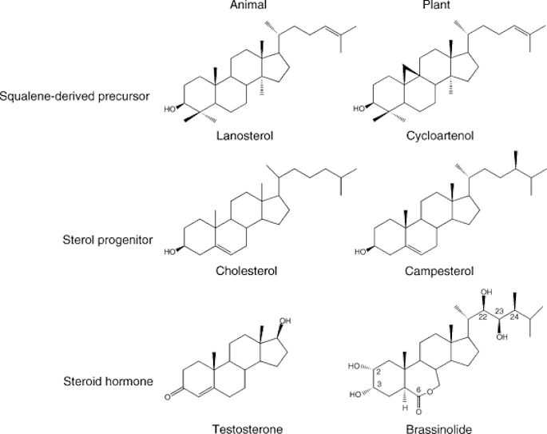
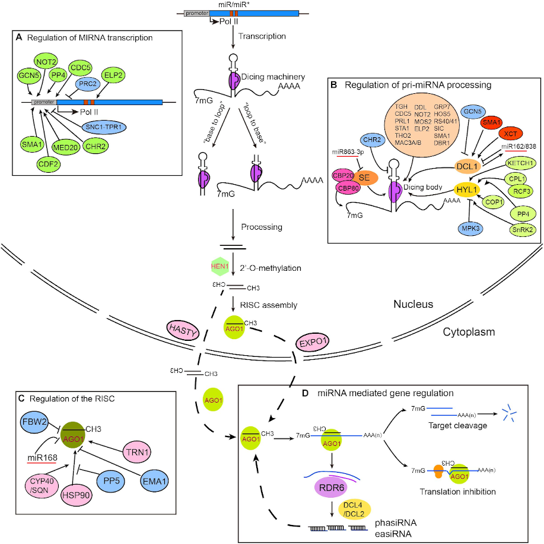
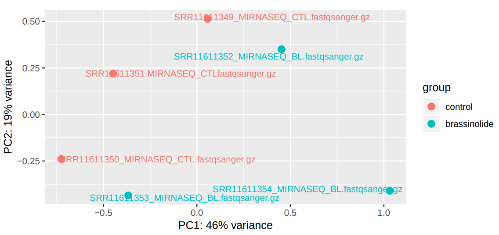
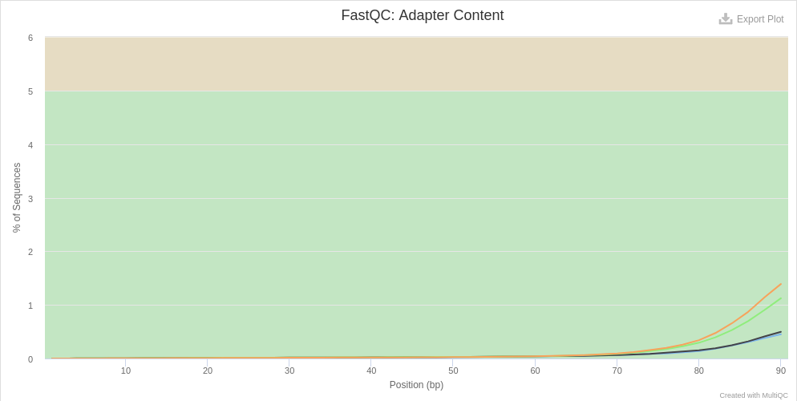
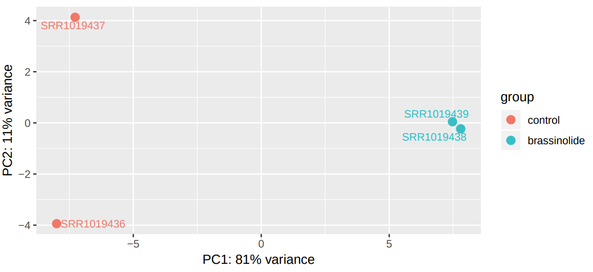

As sessile organisms, the survival of plants under adverse environmental conditions depends, to a large extent, on their ability to perceive stress stimuli and respond appropriately to counteract the potentially damaging effects. Coordination of phytohormones and reactive oxygen species are considered a key element for enhancing stress resistance, allowing fine-tuning of gene expression in response to environmental changes (Planas-Riverola et al. 2019, Ivashuta et al. 2011). These molecules constitute complex signalling networks, endowing with the ability to respond to a variable natural environment.
Brassinosteroids (BRs) are a group of plant steroid hormones essential for plant growth and development, as well as for controlling abiotic and biotic stress. Structurally, BRs are polyhydroxylated sterol derivatives with close similarity to animal hormones (Figure 1). This group of phytohormones is comprised of around 60 different compounds, of which brassinolide (BL), 24-epibrassinolide (EBR), and 28-homobrassinolide (HBR) are considered the most bioactive.
Figure 1: Structure of various plant and animal steroid hormones.
Several recent studies suggest that the BR-mediated gene regulatory networks have the potential to reshape the future of agriculture, not only by alleviating the antagonistic effect diverse abiotic stress conditios, such as drought, but also by enhancing plant growth and yield. For instance, in tomato (Solanum lycopersicum), EBR treatment enhances drought tolerance, improving photosynthetic capacity, leaf water status, and antioxidant defense (Wang et al. 2018). In pepper (Capsicum annuum), BL treatment increased the efficiency of light utilization under drought (Hu et al. 2013). Gram (Cicer arietinum) plants exposed to drought stress and treated with BL showed significant increases in weight (Anwar et al. 2018). However, the mechanisms of BRs action in enhancing plant tolerance to abiotic stresses still remain largely unknown.
MicroRNAs (miRNAs), mainly 20–22 nucleotide small RNAs (sRNAs), are characterized for regulating gene expression at the post-transcriptional level. miRNAs are distinguished from other sRNAs by being generated from precursor harboring an imperfect stem‐loop structure. Unlike in animals, the pre-processing of plant miRNA occurs in the nucleus (Figure 2). The pre-miRNAs are then exported to the cytoplasm after methylation and incorporated into the Argonaute 1 protein to form RISC (RNA-induced silencing complex). The miRNA itself does not have the ability to cleave mRNAs or interfere with translation, but it plays a role in scanning the appropriate target.
Figure 2: Plant miRNA biosynthesis, homeostasis and mechanisms of action (Wang et al. 2018).
miRNAs have been found to be important regulators of many physiological processes, such as stress and hormonal responses. Four factors justify the miRNAs to be considered as master regulators of the plant response to the surrounding environment:
Multiple miRNA genes are regulated under given environmental conditions
Computational predictions estimate that each miRNA regulates hundreds of genes
The majority of plant miRNAs regulate genes encoding for transcription factors (TFs)
Targets include not only mRNAs but also long noncoding RNAs (lncRNAs)
In plants, miRNAs can silence targets through RNA degradation as well as translational repression pathways, and unlike animals, a large proportion of miRNA and their targets have less than four mismatches. This feature has been exploited for developing miRNAs target prediction tools, providing an efficient approach to elucidate the miRNA-mediated regulatory networks, which can contribute to biotechnological solutions to improve crops productivity.
In this tutorial, inspired by Park et al. 2020, we aim to explore the interplay between brassinosteroids and the miRNA-gene silencing pathway, considered one of the most versatile regulatory mechanisms in response to stressful situations in plants.
The main objective of this training is to identify potential targets of miRNAs whose expression is induced by brassinosteroids. Our starting hypothesis is that there must be brassinosteroid-induced miRNAs that have high sequence complementarity with mRNAs whose expression is inhibited in the presence of these hormones (Figure 3).
Figure 3: Experimental design
Background on data
The datasets to be used in this training can be classified into three groups: miRNAreads, mRNAreads and additional datasets.
miRNAreads
The miRNA datasets consist of six FASTQ files, obtained by using the Illumina GAxII sequencing platform. The plant samples were obtained from wild-type Ws-2 seedlings treated with mock or 1 μM EBR for 90 min before harvest. The original datasets are available in the NCBI SRA database, with the accession number SRP258575. As in the previous case, for this tutorial, we will use a reduced version of the data.
mRNAreads
The mRNA datasets consist of four FASTQ files, generated through the Illumina HiSeq 2000 sequencing system. The samples were obtained from wild-type Columbia (Col-0) seedlings treated with mock or 100 nM BL for 4 hours. The original datasets are available in the NCBI SRA database, with the accession number SRP032274. For this tutorial, subsets from the original data were generated in order to reduce the analysis run time.
Additional datasets
In addition to the RNA-Seq reads obtained from the NCBI database, we will use datasets from two sources:
AtRTD2 is a high-quality transcript reference dataset developed to exploit the accuracy of transcript quantification tools such as Salmon and Kallisto in analyzing ArabidopsisRNA-Seq data.
PmiREN is a comprehensive functional plant miRNA database that includes more than 20,000 annotated miRNAs diverse plant species.
Get data
The first step of our analysis consists of retrieving the miRNA-Seq datasets from Zenodo and organizing them into collections.
hands_on Hands-on: Retrieve miRNA-Seq and mRNA-Seq datasets
Create a new history for this tutorial
Import the files from Zenodo:
Open the file galaxy-uploadupload menu
Click on Rule-based tab
“Upload data as”: Collection(s)
Copy the following tabular data, paste it into the textbox and press Build
From Rules menu select Add / Modify Column Definitions
Click Add Definition button and select List Identifier(s): column A
tip Can’t find List Identifier?
Then you’ve chosen to upload as a ‘dataset’ and not a ‘collection’. Close the upload menu, and restart the process, making sure you check Upload data as: Collection(s)
Click Add Definition button and select Collection Name: column B
Click Add Definition button and select URL: column C
Click Add Definition button and select Type: column D
Click Apply and press Upload
Tip: Adding a tag
Click on the dataset
Click on galaxy-tagsEdit dataset tags
Add a tag starting with #
Tags starting with # will be automatically propagated to the outputs of tools using this dataset.
Check that the tag is appearing below the dataset name
Next we will retrieve the remaining datasets.
hands_on Hands-on: Retrieve the additional datasets
Import the files from Zenodo:
Open the file galaxy-uploadupload menu
“Upload data as”: Datasets
Once again, copy the tabular data, paste it into the textbox and press Build
From Rules menu select Add / Modify Column Definitions
Click Add Definition button and select Name: column A
Click Add Definition button and select URL: column B
Click Apply and press Upload
details Dataset subsampling
As indicated above, for this tutorial the depth of the samples was reduced in order to speed up the time needed to carry out the analysis. This was done as follows:
hands_on Hands-on: Dataset subsampling
Sub-sample sequences files Tool: toolshed.g2.bx.psu.edu/repos/peterjc/sample_seqs/sample_seqs/0.2.5 with the following parameters:
param-files“Multiple datasets”: Each of the fastq files
“Subsampling approach”: Take every N-th sequence (or pair e.g. every fifth sequence)
“N”: 100
In this way, we will only take 1% of reads at a random sampling rate.
miRNA data analysis
Once we have imported the data, we can begin to study how brassinosteroid exposure alters gene expression patterns.
Quality assessment of miRNAreads
Due to technical limitations, sequencing is considered an error-prone process. In Illumina sequencing platforms, substitution type miscalls are the dominant source of errors, which can lead to inconsistent results. Another factor that can interfere with our analyses is the presence of adapter contaminants, which can result in an increased number of unaligned reads, since the adapter sequences are synthetic and do not occur in the genomic sequence.
Sequence quality control is therefore an essential first step in your analysis. We will use two popular tools for evaluating the quality of our raw reads: FastQC and MultiQC.
comment Comments
In order to visualize the data from both collections together in the MultiQC tool, it will be necessary to combine the results generated by FastQC.
For more information on the topic of quality control, please see our training materials here.
hands_on Hands-on: Initial quality check
FastQCTool: toolshed.g2.bx.psu.edu/repos/devteam/fastqc/fastqc/0.72+galaxy1 with the following parameters:
param-collection“Dataset collection”: Control miRNA
Rename the outputs as FastQC unprocessed control miRNA: RawData and FastQC unprocessed control miRNA: Webpage
Repeat the previous steps with the BR treated miRNA collection.
Merge CollectionsTool: MERGE_COLLECTION with the following parameters:
In “Input collections”:
“1.Input Collections”: FastQC unprocessed control miRNA: RawData
MultiQCTool: toolshed.g2.bx.psu.edu/repos/iuc/multiqc/multiqc/1.8+galaxy1 with the following parameters:
In “Results”:
“Which tool was used generate logs?”: FastQC
param-collection“Dataset collection”: select the output generated in the previous step.
In “Report title”: miRNA initial quality check
Click on the galaxy-eye (eye) icon and inspect the generated HTML file
question Questions
Based on the information provided by MultiQC, is it necessary to trimming/filtering the reads?
solution Solution
The report generated by MultiQC indicates that three quality parameters show values outside the recommended limits: per sequence G/C content, overrepresented sequences and adapter content.
Figure 4: Per sequence GC content of the miRNA samples.Figure 5: Overrepresented sequences in miRNA samples.Figure 6: Adaptor content of miRNA samples.
Particularly remarkable is the content of adapters, which are up to 80% of the reads in some samples. Given the abundance of adapters, one would expect that if we eliminate this source of contamination, the rest of the parameters would show a noticeable improvement.
To remove the adapters contamination, we will employ the Trim Galore tool, a wrapper script around Cutadapt and FastQC which automates quality and adapter trimming.
hands_on Hands-on: Trimming of adapter sequences
Trim Galore!Tool: toolshed.g2.bx.psu.edu/repos/bgruening/trim_galore/trim_galore/0.4.3.1 with the following parameters:
“Is this library paired- or single-end?”: Single-end
param-collection“Reads in FASTQ format”: Control miRNA
“Adapter sequence to be trimmed”: Illumina small RNA adapters
Rename the output collection as Control miRNA trimmed
Repeat the previous steps with the BR treated miRNA collection.
Next, we will reassess the quality of the sequences to check if the adapters have been removed.
hands_on Hands-on: Post-processing quality check
FastQCTool: toolshed.g2.bx.psu.edu/repos/devteam/fastqc/fastqc/0.72+galaxy1 with the following parameters:
param-collection“Dataset collection”: Control miRNA trimmed
Rename the outputs as FastQC processed control miRNA: RawData and FastQC processed control miRNA: Webpage
Repeat the previous steps with the BR treated miRNA trimmed collection.
Merge CollectionsTool: MERGE_COLLECTION with the following parameters:
In “Input collections”:
“1.Input Collections”: FastQC processed control miRNA: RawData
MultiQCTool: toolshed.g2.bx.psu.edu/repos/iuc/multiqc/multiqc/1.8+galaxy1 with the following parameters:
In “Results”:
“Which tool was used generate logs?”: FastQC
param-collection“Dataset collection”: select the output generated in the previous step.
In “Report title”: miRNA trimmed quality check
Click on the galaxy-eye (eye) icon and inspect the generated HTML file
The evaluation of the report generated by MultiQC after having processed the samples by Trim Galore indicates that the G/C content has been successfully corrected, and that the adapter contamination has been eliminated. However, the samples still show a high degree of over-represented sequences (Figure 7).
Figure 7: Report of overexpressed sequences in the miRNAreads
question Questions
What do you think could be the cause of the high number of over-represented sequences?
solution Solution
Two of the factors that may determine the abundance of overrepresented sequences are the existence of highly expressed miRNAs (Seco-Cervera et al. 2018), the existence of highly conserved sequence motifs within the miRNA (Glazov et al. 2008), and contamination with foreign sequences.
miRNA quantification: MiRDeep2
Quantification of miRNAs requires to use two different tools:
The MiRDeep2 Mapper tool for preprocessing the reads.
The MiRDeep2 Quantifier tool for mapping the deep sequencing reads to predefined miRNA precursors and determining the expression of the corresponding miRNAs. It is carried out in two steps: firstly, the predefined mature miRNA sequences are mapped to the predefined precursors (optionally, predefined star sequences can be mapped to the precursors too). And second, the deep sequencing reads are mapped to the precursors.
hands_on Hands-on: Quantification of miRNAs
MiRDeep2 MapperTool: toolshed.g2.bx.psu.edu/repos/rnateam/mirdeep2_mapper/rbc_mirdeep2_mapper/2.0.0 with the following parameters:
param-collection“Deep sequencing reads”: Control miRNA trimmed
“Remove reads with non-standard nucleotides”: Yes
“Clip 3’ Adapter Sequence”: Don't Clip
“Collapse reads and/or Map”: Collapse
Rename the output as Collapsed control miRNA
Repeat the previous stages by providing BR treated miRNA trimmedas input, and rename it as Collapsed BR treated miRNA.
MiRDeep2 QuantifierTool: toolshed.g2.bx.psu.edu/repos/rnateam/mirdeep2_quantifier/rbc_mirdeep2_quantifier/2.0.0 with the following parameters:
param-collection“Collapsed deep sequencing reads”: Collapsed control miRNA
Rename the outputs as MiRDeep2 control miRNA and MiRDeep2 control miRNA (html).
Repeat the fourth step by providing Collapsed BR treated miRNA as input, and rename the outputs as MiRDeep2 BR treated miRNA and MiRDeep2 BR treated miRNA (html)
To use the outputs generated by MiRDeep2 Quantifier in the differential expression analysis, it is necessary to modify the datasets.
hands_on Hands-on: Edition of MiRDeep2 Quantifier outputs
Cut columns from a tableTool: Cut1 with the following parameters:
“Cut columns”: c1,c2
“Delimited by”: Tab
param-collection“From”: MiRDeep2 control miRNA
Rename the output as control miRNA counts
Cut columns from a tableTool: Cut1 with the following parameters:
“Cut columns”: c1,c2
“Delimited by”: Tab
param-collection“From”: MiRDeep2 BR treated miRNA
Rename the output as BR treated miRNA counts
Differential expression analysis of miRNAs: DESeq2
DESeq2 is a tool for differential gene expression analysis based on a negative binomial generalized linear model. DESeq2 internally corrects the differences in library size, due to which no preliminary normalization of input datasets is required.
comment Comments
It is desirable to use at least three replicates of each experimental condition to ensure sufficient statistical power.
hands_on Hands-on: Differential expression analysis using DESeq2
DESeq2Tool: toolshed.g2.bx.psu.edu/repos/iuc/deseq2/deseq2/2.11.40.6+galaxy1 with the following parameters:
“How”: Select datasets per level
In “Factor”:
param-repeat“Insert Factor”
“Specify a factor name, e.g. effects_drug_x or cancer_markers”: effects_brassinolide
param-collection“Counts file(s)”: control miRNA counts
“Files have header?”: No
“Choice of Input data”: Count data (e.g. from HTSeq-count, featureCounts or StringTie)
Rename the outputs as DESeq2 results miRNA and DESeq2 plots miRNA
Click on the galaxy-eye (eye) icon and inspect the DESeq2 plots miRNA file
DESeq2 generated 2 outputs: a table with the normalized counts and a graphical summary of the results. To evaluate the similarity of our samples, we are going to inspect the Principal Component Analysis (PCA) plot. PCA allows evaluating the dominant directions of the highest variability in the data. Thus, the samples subjected to the same conditions should cluster together.
Figure 8: PCA plot of expression data from control and BR treated miRNA samples.
As can be seen, the main axes account for only 47% and 19% of the total variation. This suggests that the effect of brassinosteroids on miRNA regulation is limited (Figure 8).
Next, we will extract those genes whose expression is statistically significantly differentially expressed (DE) due to BR treatment by selecting those whose adjusted p-value is less than or 0.05. A cut-off value of 0.05 indicates that the probability of a false positive result is less than 5%.
details p-value vs p-adj
The p-value is a measure of the probability that an observed difference could have occurred just by random chance. A small p-value indicates that there is a small chance of getting this data if no real difference existed. A p-value threshold of 0.05 indicates that there is a 5% chance that the result is a false positive. The p-adj (also known as q-value) is an adjusted p-value which taking in to account the false discovery rate (FDR). Applying a FDR becomes necessary when we’re measuring thousands of variables from a small sample set.
FilterTool: Filter1 data on any column using simple expressions (Galaxy Version 1.1.1) with the following parameters:
param-file“Filter”: DESeq2 results miRNA
“With following condition”: c7<0.05
question Questions
How many miRNAs show statistically significant differential expression?
solution Solution
Unfortunately, we have not detected any differentially expressed miRNAs. In this case, this is caused by the fact that the subsampled datasets don’t have sufficient read depth to test for differential expression.
To get any sensible results, it is worth analyzing the full dataset. You can analyze the full datasets following the above tutorial. Otherwise, you can import the DESeq2 analysis results that we generated from full dataset into your history.
hands_on Hands-on: Retrieve the DESeq2 analysis results on full miRNA dataset
SortTool: sort1 data in ascending or descending order (Galaxy Version 1.1.0) with the following parameters:
param-file“Sort Dataset”: Upregulated miRNAs
“on column”: Column: 3
“everything in”: Descending order
question Questions
How many miRNAs are differentially expressed?
How many miRNAs show statistically significant upregulation and what is the most upregulated miRNA?
solution Solution
Out of 442 miRNAs, 39 show significant differential expression.
There are 16 upregulated miRNAs and Ath-miR156g is the most upregulated one.
mRNA data analysis
Once the differential expression analysis of miRNAs has been carried out, the next stage is to analyze how mRNAexpression is altered in response to brassinosteroids.
Quality assessment of mRNAreads
As in the previous section, we shall begin by assessing the quality of our sequences.
hands_on Hands-on: Initial quality check
FastQCTool: toolshed.g2.bx.psu.edu/repos/devteam/fastqc/fastqc/0.72+galaxy1 with the following parameters:
param-collection“Dataset collection”: Control mRNA
Rename the outputs as FastQC unprocessed control mRNA: RawData and FastQC unprocessed control mRNA: Webpage
Repeat the previous step with the BR treated mRNA collection.
Merge CollectionsTool: MERGE_COLLECTION with the following parameters:
In “Input collections”:
“1.Input Collections”: FastQC unprocessed control mRNA: RawData
MultiQCTool: toolshed.g2.bx.psu.edu/repos/iuc/multiqc/multiqc/1.8+galaxy1 with the following parameters:
In “Results”:
“Which tool was used generate logs?”: FastQC
param-collection“Dataset collection”: select the output generated in the previous step.
“Report title”: mRNA initial quality check
Click on the galaxy-eye (eye) icon and inspect the generated HTML file
question Questions
Are there any stats that indicate the need to process the samples in order to improve their quality?
solution Solution
All the stats are within acceptable limits. However, the adapter content shows the presence of Illumina universal adapters in our reads, which can be removed to avoid possible interferences at later stages (Figure 10).
Figure 9: Quality assessment of mRNA samples
comment Comments
Although our samples have adapters, we are not going to trim them in this case. We will explain the reason in the next section.
Quantification of gene expression: Salmon
After performing the quality assessment of the reads, we can move on to quantifying the gene expression. The aim of this step is to identify which transcript each read comes from and the total number of reads associated with each transcript. In this tutorial, we will use the Salmon tool (Patro et al. 2017) for the quantification of mRNA transcripts.
One of the characteristics of Salmon is that it doesn’t require performing a base-to-base alignment, which is the time-consuming step of tools such as STAR and HISAT2. Salmon relies on the quasi-mapping concept, a new mapping technique that allows the rapid and accurate mapping of RNA-Seq reads to a target transcriptome. Rather than a standard alignment, quasi-mapping seeks to find the best mappings for each read, and does so by finding minimal collections of dynamically sized, right-maximal, matching contexts between target and query positions (Srivastava et al. 2016)
The quasi-mapping approach by Salmon requires a reference index to determine the position and orientation information for accurate mapping prior to quantification. It allows providing the transcriptome in a format that optimizes its use in transcript identification and quantification.
After determining the best mapping for each read, Salmon generates the final transcript abundance estimation after modeling sample-specific parameters and biases. Reads that map equally well to more than one transcript will have the count divided between all of the mappings, thus avoiding the loss of information on the different gene isoforms.
details Quasi-mapping algorithm
The quasi-mapping algorithm makes use of two main data structures, the generalized suffix array (SA) of the transcriptome T, and a hash table (h) that maps each k-mer in T to its SA interval (by default k = 31). During the quasi-mapping procedure, a read is scanned from left to right until a k-mer (ki, starting at position i on the read) is encountered that appears in h. The ki is looked up in the hash table and the SA intervals are retrieved, giving all suffixes containing the k-mer ki. Then, the Maximal Mappable Prefix (MMPi) is computed by finding the longest substring of the read that matches the reference suffixes. Owing to sequencing errors, the MMPs may not span the complete read. In this case, the next informative position (NIP) is determined based on the longest common prefix of the SA intervals of MMPi. Suffix array search continues from k-bases before NIP until the final NIP is less than k-bases before the read end. Finally, for each read, the algorithm reports the transcripts it mapped to, location and strand information (Srivastava et al. 2016).
Figure 10: Illustration of the quasi-mapping of a read using k=3. Hash table lookup of ki returns the suffix array interval [b, e). The base 'G' at position 6 in the read is a result of sequencing error. Hence, the MMPi is 'ATTGA' and the SA interval of MMPi is [b', e'). The next k-mer starts at k-bases prior to the NIP which is base after the longest common prefix of the interval [b',e'). In the end, the read in the above example most likely map to the suffix array at [e'-1, e').
hands_on Hands-on: Quantify gene expression with Salmon
Salmon quantTool: toolshed.g2.bx.psu.edu/repos/bgruening/salmon/salmon/0.14.1.2+galaxy1 with the following parameters:
“Select salmon quantification mode:”: Reads
“Select a reference transcriptome from your history or use a built-in index?”: Use one from the history
In “Salmon index”:
param-file“Transcripts fasta file”: transcriptome.fasta
In “Data input”:
“Is this library mate-paired?”: Single-end
param-collection“FASTQ/FASTA file”: Control mRNA
“Validate mappings”: Yes
param-file“File containing a mapping of transcripts to genes”: annotation_AtRTD2.gtf
Rename the outputs as Salmon control mRNA (Quantification) and Salmon control mRNA (Gene Quantification)
Repeat the previous procedure by using the BR treated mRNA dataset
comment Quasi-mapping sequence requirements
Trimming the reads is not required when using this method, since if there are k-mers in the reads that are not in the hash table, they are not counted. Quantification of the reads is only as good as the quality of the reference transcriptome.
Salmon generates two outputs for each input sample:
Quantification: summarizes the quantifications by transcript
Gene quantification: summarizes the quantification by gene
Each output consists of a tabular dataset with five columns:
Field
Description
Name
The name of the target transcript provided in the input transcriptome.
Length
The length of the target transcript.
EffectiveLength
The computed effective length.
TPM
The relative abundance of this transcript in units of Transcripts Per Million.
NumReads
The number of readsmapping to each transcript that was quantified.
question Questions
Could you explain why we did not trim the reads before?
solution Solution
The reason is that, since the k-mers which contain the adaptor sequences are not present in the transcriptome (from which the hash table is generated), they are omitted.
Differential expression analysis of mRNAs: DESeq2
hands_on Hands-on: DEA using DEseq2
DESeq2Tool: toolshed.g2.bx.psu.edu/repos/iuc/deseq2/deseq2/2.11.40.6+galaxy1 with the following parameters:
“How”: Select datasets per level
In “Factor”:
param-repeat“Insert Factor”
“Specify a factor name, e.g. effects_drug_x or cancer_markers”: effects_brassinolide
Rename the outputs as DESeq2 results mRNA and DESeq2 plots mRNA
Figure 11: PCA plot of differential expression data from control and BR treated samples.
question Questions
What conclusions about the similarity of the samples can be derived from the PCA plot?
solution Solution
From the information provided by the plot, it is possible to state that there is a high similarity between the samples belonging to the same experimental conditions, since the first dimension (x-axis) allows to explain 81% of the variability, and the samples are located at opposite ends of the x-axis.
To conclude the analysis of the differential expression of mRNAs, we will extract those transcripts that show a significant induction of expression in response to brassinosteroids. Before continuing with further analysis, similar to miRNA data analysis, import the DESeq2 results generated from full mRNA datasets.
hands_on Hands-on: Retrieve the DESeq2 analysis results on full mRNA dataset
How many genes show statistically significant differential expression?
How many of them are upregulated? And downregulated?
What is the most significantly DE downregulated gene and what is it biological function?
solution Solution
The total number of genes whose expression differential between the two experimental conditions is 4176.
Of them, 328 are downregulated by the BR treatment and 778 are upregulated.
The most significantly DE gene is AT3G30180 (BR60X2). BR60X2 encodes a cytochrome p450 enzyme that catalyzes the last reaction in the production of brassinolide. It is capable of converting 6-deoxocastasterone into castasterone, a C-6 oxidation, as well as the further conversion of castasterone into brassinolide (source: TAIR database).
comment Comments
The sum of genes considered as upregulated and downregulated is lower than the total number of genes whose expression is statistically different is due to the fact that we have selected only those whose difference in transcript abundance is greater than a factor of 2.
Identification of miRNA targets
To predict which miRNAs target which mRNAs, first we need their transcriptomic sequences in FASTA format. Now we will obtain the sequences of miRNAs whose expression is induced by brassinosteroids.
hands_on Hands-on: Obtaining the sequences of upregulated miRNAs
comment Comment
The following tools can be found in Text Manipulation and Filter and Sort sections.
Cut columns from a tableTool: Cut1 with the following parameters:
“Cut columns”: c1
“Delimited by”: Tab
param-collection“From”: Upregulated miRNAs
Rename the output as Upregulated miRNA ids
Filter FASTATool: toolshed.g2.bx.psu.edu/repos/galaxyp/filter_by_fasta_ids/filter_by_fasta_ids/2.1 with the following parameters:
“Criteria for filtering on the headers”: List of IDs
param-file *“List of IDs to extract sequences for: Downregulated mRNA ids
“Match IDs by”: Custom regex pattern
“Regex search pattern for ID”: GENE=(AT.{7})
Rename it as Downregulated mRNA sequences
Click on the galaxy-eye (eye) icon and inspect the Downregulated mRNA sequences file
miRNA target prediction using TargetFinder
We are now ready to launch the search for miRNA target genes. For this we will use the TargetFinder tool that is implemented and used for miRNA target prediction in plants (Srivastava et al. 2014, Ma et al. 2017).
hands_on Hands-on: identification of potential miRNA targets
TargetFinderTool: toolshed.g2.bx.psu.edu/repos/rnateam/targetfinder/targetfinder/1.7.0+galaxy1 with the following parameters:
param-file“Input small RNA sequences file”: Upreguled miRNA sequences
One of the hypotheses that we could propose from our results is: the inhibition of the AT2G46850 gene can result in plants with improved resistance to drought conditions. Is it possible to validate it? Yes! We propose this approach: to acquire AT2G46850 mutant seeds and wild type seeds, grow them under two controlled conditions: watered and drought stress, and analyze plant weight after 33 days (Figure 13).
As additional activity, you can try to repeat the workflow by using the sequences stored in the NCBI GEO database with the accession number GSE119382. In that case, we will compare gene expression patterns of mutants overexpressing the brassinosteroid receptor BRL3 under two experimental conditions: control and drought-stress. The required datasets are available in the data library:
hands_on Hands-on: Import data from the Data Libraries
Go into Shared data (top panel) and click on Data Libraries
In the search box enter the following identifier: 4710649
In this tutorial, we have analyzed RNA sequencing data to extract information about potential genes regulated by brassinosteroids. For this purpose, the approach chosen was the identification of genes complementary to miRNAs upregulated in response by brassinosteroids. The final result has been the identification of five potential miRNA targets.
Key points
MiRDeep2 in combination with the PmiREN database allows to quantify miRNA expression in plants
The use of the Salmon tool and the AtRTD2 transcriptome allows rapid and accurate quantification of transcripts in Arabidopsis
The combination of differential expression analysis and the TargetFinder tool is an effective strategy for the identification of miRNA target genes
Further information, including links to documentation and original publications, regarding the tools, analysis techniques and the interpretation of results described in this tutorial can be found here.
References
Glazov, E. A., S. McWilliam, W. C. Barris, and B. P. Dalrymple, 2008 Origin, Evolution, and Biological Role of miRNA Cluster in DLK-DIO3 Genomic Region in Placental Mammals. Molecular Biology and Evolution 25: 939–948. 10.1093/molbev/msn045
Ivashuta, S., I. R. Banks, B. E. Wiggins, Y. Zhang, T. E. Ziegler et al., 2011 Regulation of Gene Expression in Plants through miRNA Inactivation (G. Dalmasso, Ed.). PLoS ONE 6: e21330. 10.1371/journal.pone.0021330
Hu, W.-hai, X.-hong Yan, Y.-an Xiao, J.-jun Zeng, H.-juan Qi et al., 2013 24-Epibrassinosteroid alleviate drought-induced inhibition of photosynthesis in Capsicum annuum. Scientia Horticulturae 150: 232–237. 10.1016/j.scienta.2012.11.012
Srivastava, P. K., T. Moturu, P. Pandey, I. T. Baldwin, and S. P. Pandey, 2014 A comparison of performance of plant miRNA target prediction tools and the characterization of features for genome-wide target prediction. BMC Genomics 15: 348. 10.1186/1471-2164-15-348
Srivastava, A., H. Sarkar, N. Gupta, and R. Patro, 2016 RapMap: a rapid, sensitive and accurate tool for mapping RNA-seq reads to transcriptomes. Bioinformatics 32: i192–i200. 10.1093/bioinformatics/btw277
Ma, X., C. Liu, L. Gu, B. Mo, X. Cao et al., 2017 TarHunter, a tool for predicting conserved microRNA targets and target mimics in plants (I. Hofacker, Ed.). Bioinformatics 34: 1574–1576. 10.1093/bioinformatics/btx797
Patro, R., G. Duggal, M. I. Love, R. A. Irizarry, and C. Kingsford, 2017 Salmon provides fast and bias-aware quantification of transcript expression. Nature Methods 14: 417–419. 10.1038/nmeth.4197
Anwar, A., Y. Liu, R. Dong, L. Bai, X. Yu et al., 2018 The physiological and molecular mechanism of brassinosteroid in response to stress: a review. Biological Research 51: 10.1186/s40659-018-0195-2
Wang, C.-Y., T. Jégu, H.-P. Chu, H. J. Oh, and J. T. Lee, 2018 SMCHD1 Merges Chromosome Compartments and Assists Formation of Super-Structures on the Inactive X. Cell 174: 406–421.e25. 10.1016/j.cell.2018.05.007
Wang, Y., J.-J. Cao, K.-X. Wang, X.-J. Xia, K. Shi et al., 2018 BZR1 Mediates Brassinosteroid-Induced Autophagy and Nitrogen Starvation in Tomato. Plant Physiology 179: 671–685. 10.1104/pp.18.01028
Planas-Riverola, A., A. Gupta, I. Betegón-Putze, N. Bosch, M. Ibañes et al., 2019 Brassinosteroid signaling in plant development and adaptation to stress. Development 146: dev151894. 10.1242/dev.151894
Ollas, C. de, C. Segarra-Medina, M. González-Guzmán, J. Puertolas, and A. Gómez-Cadenas, 2019 A customizable method to characterize Arabidopsis thaliana transpiration under drought conditions. Plant Methods 15: 10.1186/s13007-019-0474-0
Park, S. Y., J.-H. Choi, D.-H. Oh, J. C. Johnson, M. Dassanayake et al., 2020 Genome-wide analysis of brassinosteroid responsive small RNAs in Arabidopsis thaliana. Genes & Genomics 42: 957–969. 10.1007/s13258-020-00964-2
Feedback
Did you use this material as an instructor? Feel free to give us feedback on how it went.
Batut et al., 2018 Community-Driven Data Analysis Training for Biology Cell Systems 10.1016/j.cels.2018.05.012
details BibTeX
@misc{transcriptomics-mirna-target-finder,
author = "Cristóbal Gallardo and Pavankumar Videm and Beatriz Serrano-Solano",
title = "Whole transcriptome analysis of Arabidopsis thaliana (Galaxy Training Materials)",
year = "2021",
month = "06",
day = "17"
url = "\url{https://training.galaxyproject.org/training-material/topics/transcriptomics/tutorials/mirna-target-finder/tutorial.html}",
note = "[Online; accessed TODAY]"
}
@article{Batut_2018,
doi = {10.1016/j.cels.2018.05.012},
url = {https://doi.org/10.1016%2Fj.cels.2018.05.012},
year = 2018,
month = {jun},
publisher = {Elsevier {BV}},
volume = {6},
number = {6},
pages = {752--758.e1},
author = {B{\'{e}}r{\'{e}}nice Batut and Saskia Hiltemann and Andrea Bagnacani and Dannon Baker and Vivek Bhardwaj and Clemens Blank and Anthony Bretaudeau and Loraine Brillet-Gu{\'{e}}guen and Martin {\v{C}}ech and John Chilton and Dave Clements and Olivia Doppelt-Azeroual and Anika Erxleben and Mallory Ann Freeberg and Simon Gladman and Youri Hoogstrate and Hans-Rudolf Hotz and Torsten Houwaart and Pratik Jagtap and Delphine Larivi{\`{e}}re and Gildas Le Corguill{\'{e}} and Thomas Manke and Fabien Mareuil and Fidel Ram{\'{\i}}rez and Devon Ryan and Florian Christoph Sigloch and Nicola Soranzo and Joachim Wolff and Pavankumar Videm and Markus Wolfien and Aisanjiang Wubuli and Dilmurat Yusuf and James Taylor and Rolf Backofen and Anton Nekrutenko and Björn Grüning},
title = {Community-Driven Data Analysis Training for Biology},
journal = {Cell Systems}
}
Congratulations on successfully completing this tutorial!
 Cristóbal Gallardo
Cristóbal Gallardo Pavankumar Videm
Pavankumar Videm Beatriz Serrano-Solano
Beatriz Serrano-Solano Questions:
Questions: